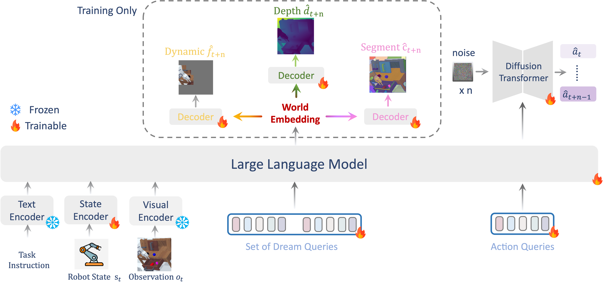
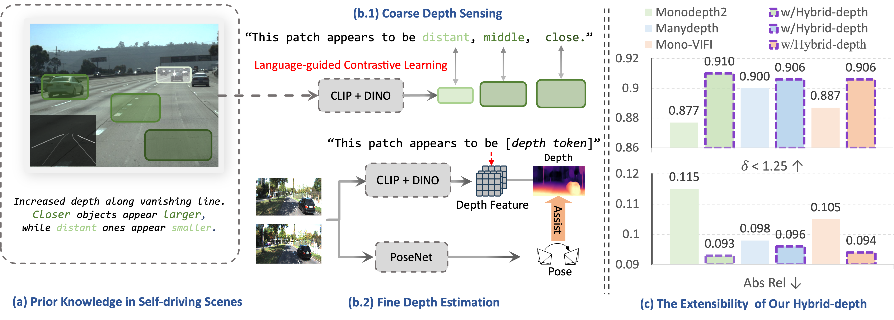
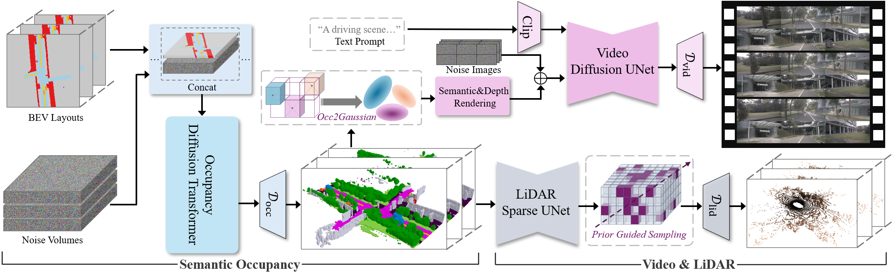
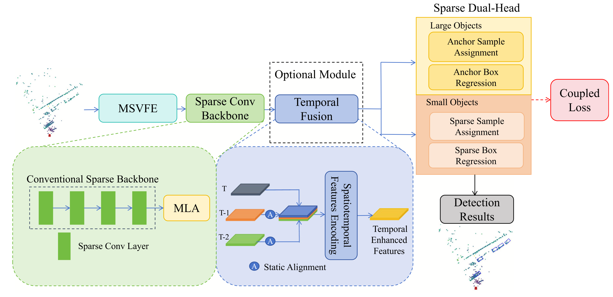
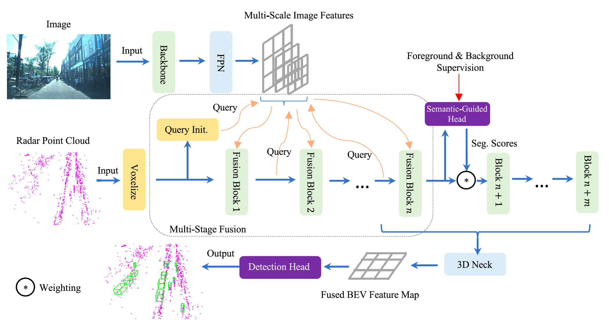

|
Hongsi Liu Hongsi Liu received the B.S. degree in Electronic Information Science and Technology from Sun Yat-sen University, Guangzhou, China, in 2022. He is currently pursuing the Ph.D. degree in Information and Communication Engineering with the Department of Electronic Engineering and Information Science, University of Science and Technology of China, Hefei, China. His research interests include deep learning, autonomous driving, robot, 3D understanding and generation. |

|
|  |
Wenyao Zhang*, Hongsi Liu*, Zekun Qi*, Yunnan Wang*, Xinqiang Yu, Jiazhao Zhang, Runpei Dong, Jiawei He, Zhizheng Zhang, He Wang, Li Yi, Wenjun Zeng, Xin Jin. NeurIPS, 2025 [arXiv] [Code] |
|  |
Wenyao Zhang*, Hongsi Liu*, Bohan Li *, Jiawei He, Zekun Qi, Yunnan Wang, Shengyang Zhao , Xinqiang Yu , Wenjun Zeng, Xin Jin. ICCV 2025 [Paper] |
|  |
Bohan Li*, Jiazhe Guo*, Hongsi Liu *, Yingshuang Zou, Yikang Ding, Xiwu Chen, Hu Zhu, Feiyang Tan, Chi Zhang, Tiancai Wang, Shuchang Zhou, Li Zhang, Xiaojuan Qi, Hao Zhao, Mu Yang, Wenjun Zeng, Xin Jin. CVPR 2025 [Project] [PDF] [Code] |
|  |
Yunting Yang, Jun Liu†, Hongsi Liu, Guangfeng Jiang. Expert Systems with Applications, 2025 [Paper] |
|  |
Hongsi Liu, Jun Liu†, Guangfeng Jiang. IEEE Transactions on Intelligent Transportation Systems, 2025 [Paper] [Code] |